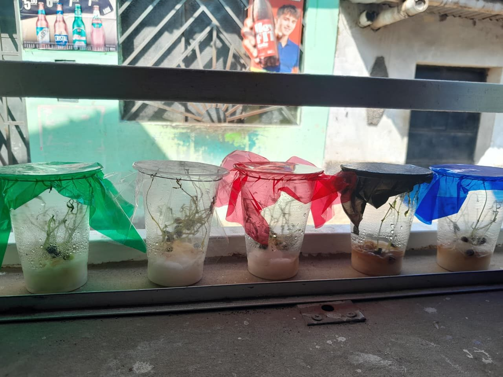
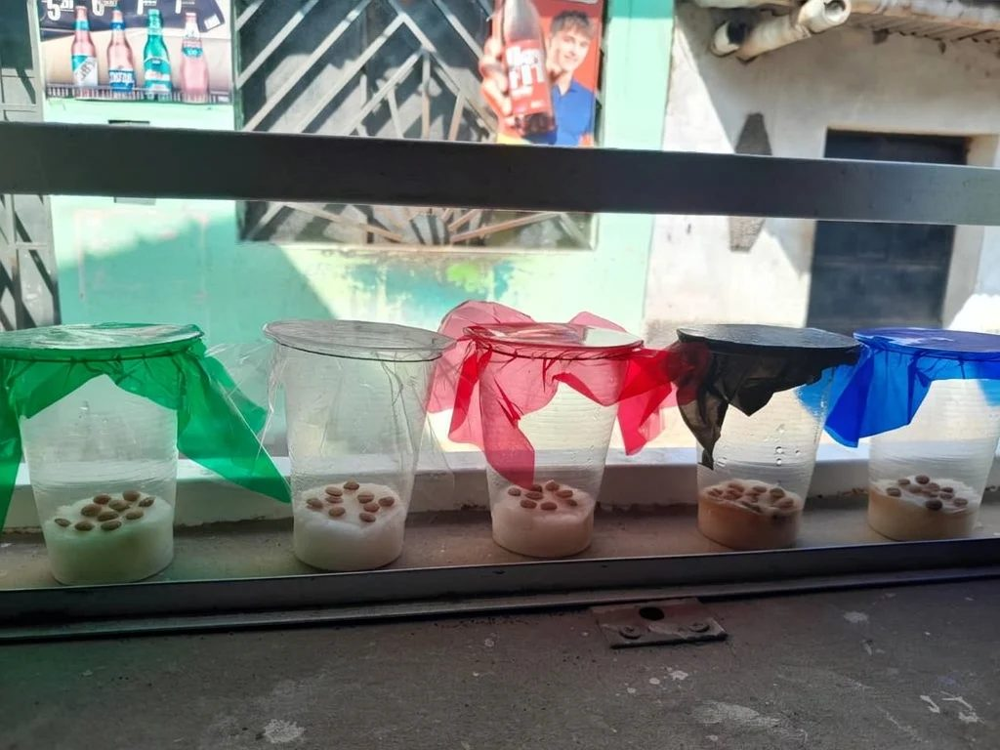
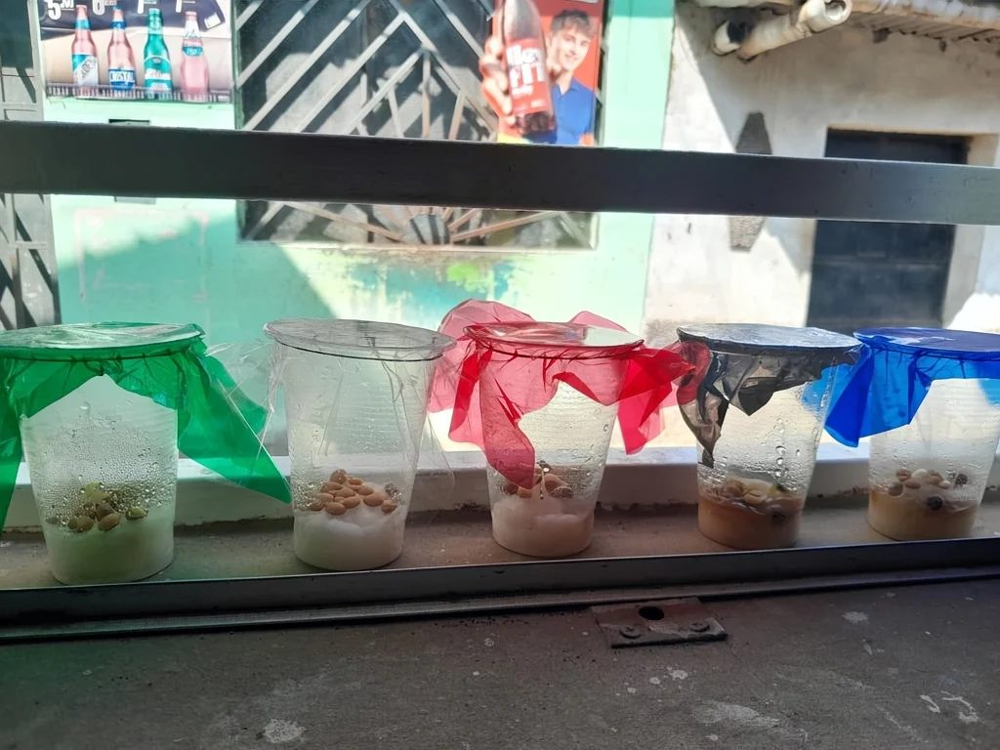
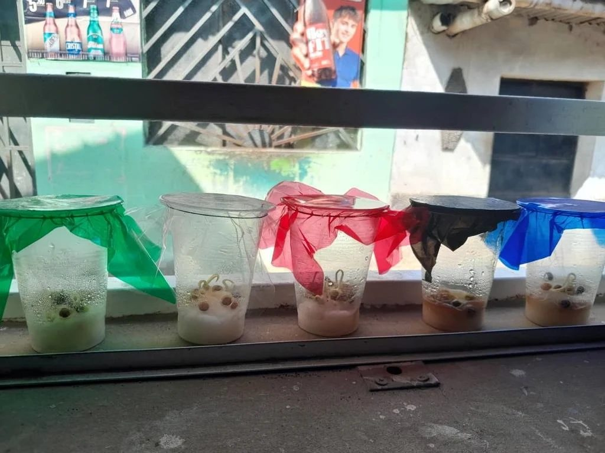
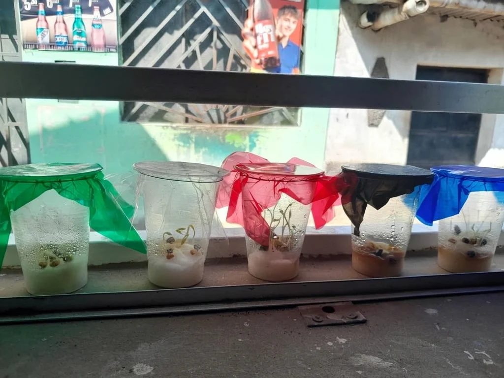

Fitocromo
Es un pigmento que permite a las plantas percibir la luz. Su forma activa, Pfr, estimula la germinación de las semillas, y la luz roja lo convierte a esa forma.
Sustenta H1
Proyecto de investigación de Ciencia y Tecnología
I.E. María de Lourdes N.º 11521 · Ciencia y Tecnología · 4.º grado, sección B
Alumna: Adriana Solange Frías Liza

¿Cómo influye el color de la luz en la germinación y el desarrollo inicial de la semilla de lenteja marrón (Lens culinaris)?
Tipos de luz y fotorreceptores
Tasa de germinación y expresión genética de la semilla
Se mantuvieron iguales: el número de semillas (10 por vaso), el lote, el agua y la temperatura.
Es un pigmento que permite a las plantas percibir la luz. Su forma activa, Pfr, estimula la germinación de las semillas, y la luz roja lo convierte a esa forma.
Sustenta H1
La luz influye en la actividad del fitocromo y en el desarrollo vegetal, por eso cada color puede dar un resultado distinto.
Sustenta H2
La falta de luz puede producir etiolación y alterar el crecimiento de las plantas.
Sustenta H3
Toca una foto para verla en grande junto con el conteo de ese día.
Semillas germinadas de 10 por vaso.
| Tratamiento | Día 1 | Día 2 | Día 3 | Día 4 | Día 5 | Tasa final | Radícula (día 5) |
|---|---|---|---|---|---|---|---|
| Transparente (control) | 0 | 1 | 3 | 5 | 7 | 70% | 18 mm |
| Celofán rojo | 0 | 2 | 3 | 6 | 8 | 80% | 14 mm |
| Celofán azul | 0 | 1 | 3 | 4 | 5 | 50% | 12 mm |
| Celofán verde | 0 | 2 | 4 | 4 | 6 | 60% | 15 mm |
| Papel aluminio (oscuridad) | 0 | 2 | 2 | 2 | 3 | 30% | 10 mm |
En todas las fotos los vasos están en el mismo orden, de izquierda a derecha: verde, transparente, rojo, oscuridad y azul.

Siembra: 10 semillas por vaso sobre algodón húmedo. Todavía ninguna germinó.

Aparecen las primeras radículas en todos los vasos.
El verde va adelante; la oscuridad se queda en 2.

El rojo pasa al frente y las radículas se alargan.

Último conteo. El rojo termina con 8 de 10 y la oscuridad con 3 de 10.
Después del registro, las plántulas siguieron creciendo: ya tienen tallos y raíces largas.
Volver a las imágenes